En la Clase 6 diseñaste un dataset. Hoy aprenderás a abrirlo, explorarlo
y diagnosticar si realmente sirve para una solución de inteligencia artificial.
Misión
Cargar, explorar y diagnosticar un dataset usando Google Colab y pandas.
Insignia
Explorador de Datos IA
Pregunta central
¿Cómo reviso con Python si mi dataset sirve para IA?
Cada reto representa una habilidad que necesitas para explorar, diagnosticar
y documentar un dataset con Python.
🎖 Insignia desbloqueada: Explorador de Datos IA
Completaste la misión. Ya sabes abrir, explorar y diagnosticar un dataset con Python.
Preparación
Qué necesitas para la clase
No necesitas instalar Python. Usaremos Google Colab desde el navegador.
Idea clave
Antes de entrenar una IA, primero hay que mirar los datos. Un modelo no debe
entrenarse a ciegas.
Guía práctica
Guía práctica de Google Colab
Tutorial visual adaptado para que puedas crear tu primer notebook, conectar tu CSV
y llegar listo al sandbox de comandos de Python y pandas.
¿Qué es Colab?
Google Colab es un entorno en la nube para escribir y ejecutar Python desde el navegador.
Combina código, texto, resultados y visualizaciones dentro de un notebook.
¿Por qué lo usamos?
Resuelve un problema práctico: usar Python sin instalar nada. Solo necesitas tu cuenta
de Google, el CSV de la Clase 6 y una conexión estable.
Producto final
Al terminar tendrás un archivo .ipynb con análisis del CSV, comandos de
exploración y conclusiones listas para tu evidencia.
Paso 1
Abrir o instalar Google Colab desde Drive
En Google Drive, haz clic derecho en un espacio vacío. Si Colab no aparece en
Más, elige Conectar más aplicaciones, busca
Colaboratory en Google Workspace Marketplace e instálalo.
Abre Drive con tu cuenta de Google.
Busca Colaboratory si no aparece en el menú.
Autoriza la aplicación para poder crear notebooks.
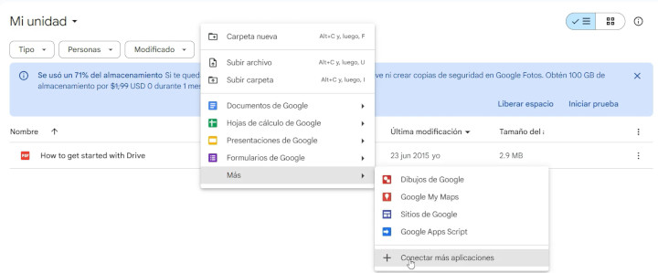
Drive permite conectar Colab desde el menú Más.
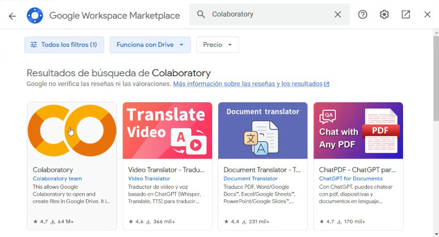
Busca Colaboratory en Google Workspace Marketplace.
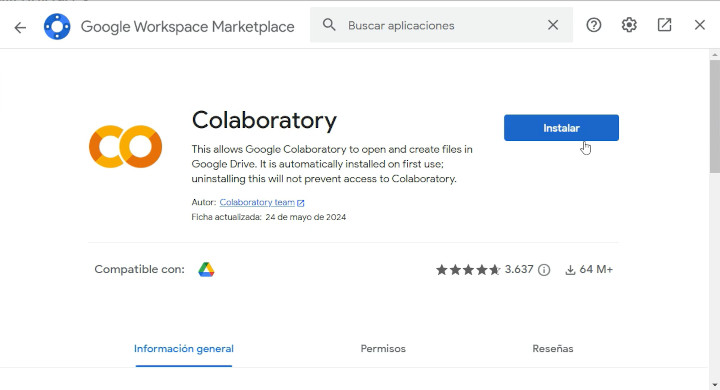
Instala Colaboratory si es la primera vez que lo usas.
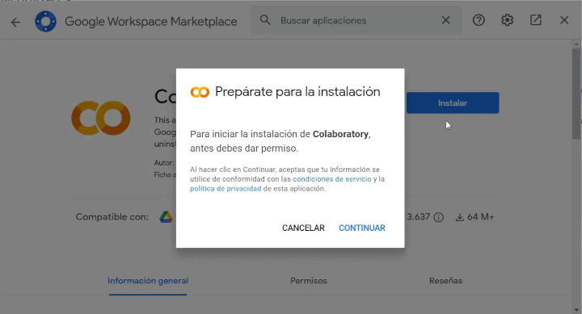
Confirma los permisos necesarios para terminar la conexión.
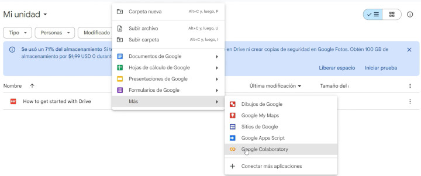
Cuando queda instalado, aparece como opción para crear archivos.
Paso 2
Crear un nuevo notebook
Desde Drive, elige Google Colaboratory. Se abrirá un notebook nuevo.
Su extensión es .ipynb, el formato usado por Jupyter y Colab.
Renómbralo con algo claro, por ejemplo clase7-diagnostico-dataset.ipynb.
Ese nombre te ayudará a encontrarlo y compartirlo como evidencia.
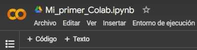
El nombre del archivo termina en .ipynb y se puede editar.
Paso 3
Ejecutar la primera celda Python
En una celda de código escribe tu primera instrucción. Ejecútala con el botón de
play o con Shift + Enter. La primera ejecución puede tardar porque
Colab asigna recursos en la nube.
print("Mi primer Notebook en Colab")
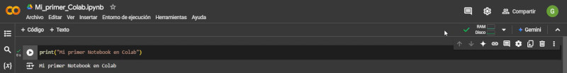
El resultado aparece debajo de la celda ejecutada.
Paso 4
Diferenciar +Código y +Texto
Usa +Código para instrucciones ejecutables en Python. Usa
+Texto para explicar lo que haces con Markdown: objetivos, hipótesis,
errores encontrados y conclusiones.
Voy a cargar mi dataset
import pandas as pd
df = pd.read_csv("dataset-clase6.csv")
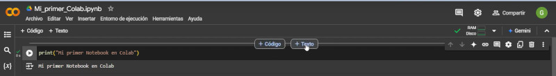
Los botones +Código y +Texto organizan el notebook.
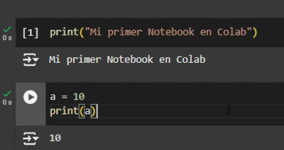
Las celdas de código ejecutan Python.
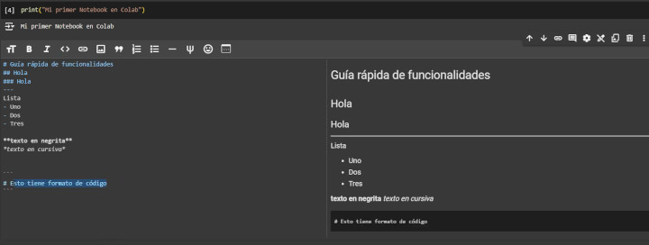
Las celdas de texto documentan el razonamiento.
Paso 5
Entorno de ejecución
Colab puede ejecutar en CPU, GPU o TPU. Para la Clase 7 recomendamos
CPU, porque solo vamos a cargar un CSV y explorarlo con pandas.
GPU y TPU serán útiles más adelante si entrenamos modelos más pesados, como redes
neuronales o procesamiento de grandes volúmenes de datos.
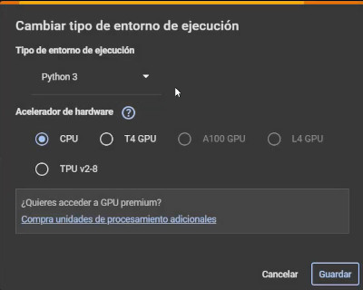
El tipo de entorno define qué recursos usa el notebook.
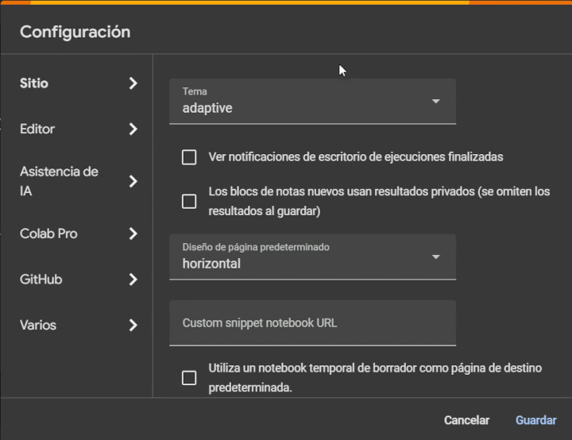
La configuración permite ajustar editor, tema y preferencias.
Paso 6
Conectar Google Drive
Conectar Drive sirve para leer archivos guardados en tu cuenta sin subirlos manualmente
cada vez. Es útil si tu CSV vive en una carpeta de clase.
from google.colab import drive
drive.mount('/content/drive')
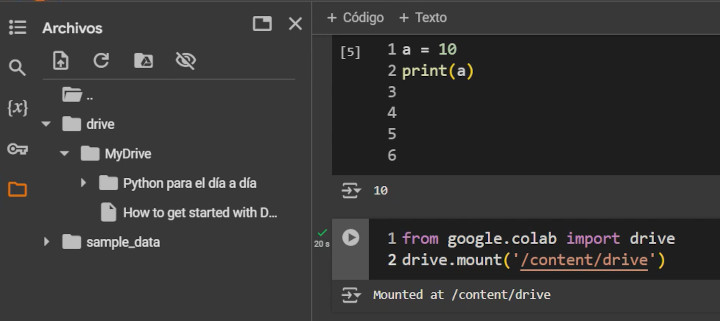
Al montar Drive, Colab puede leer archivos de tu unidad.
Paso 7
Guardar, descargar y compartir
Colab guarda automáticamente mientras trabajas. También puedes descargar el notebook
como .ipynb o exportarlo como .py.
Al compartir, revisa el permiso: lector para revisar, comentarista para sugerir y
editor solo cuando otra persona pueda modificar tu trabajo.
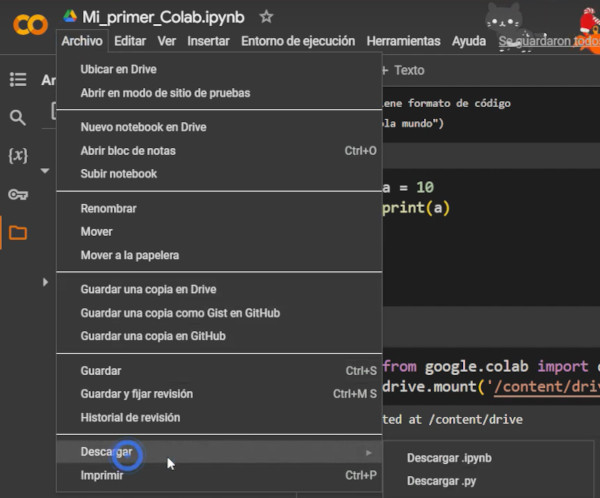
Descarga tu evidencia como notebook o archivo Python.
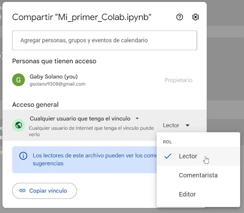
Comparte con permisos adecuados para proteger tu trabajo.
Paso 8
Limitaciones importantes
Las sesiones son temporales y pueden desconectarse.
GPU y TPU no siempre están disponibles.
Si Colab se desconecta, ejecuta de nuevo las celdas desde arriba.
El orden de ejecución importa: una celda puede depender de variables anteriores.
Guarda siempre tu CSV y tu notebook en Drive.
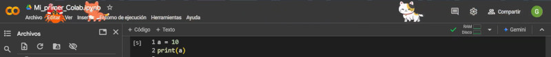
Los resultados se recalculan cuando vuelves a ejecutar el notebook.
Video complementario
El artículo incluye este video como apoyo visual. Úsalo si quieres repasar el flujo completo
antes de trabajar con tu CSV.
Checklist antes de pasar al sandbox de comandos
Marca al menos 4 puntos para sumar esta misión a tu progreso.
Un notebook es una libreta interactiva donde mezclas explicación, código y resultados.
Celda de texto
Sirve para explicar qué estás haciendo.
Voy a cargar mi dataset de cafetería para revisar si tiene columnas claras.
Celda de código
Sirve para ejecutar instrucciones.
print("Hola, datos")
Hola, datos
Nivel 2
Python básico para datos
Python es el lenguaje que usaremos para darle instrucciones a la computadora.
Primer comando
print() muestra un mensaje como resultado.
print("Mi primer análisis de datos")
Resultado pendiente...
Operaciones simples
Python también puede calcular.
2 + 3
Resultado pendiente...
Completa tu primer print
Escribe el tema de tu dataset y genera el comando.
print("Mi dataset es de ...")
Nivel 3
Pandas y DataFrame
Pandas es una librería de Python para trabajar con datos en forma de tabla.
importTrae una librería
pandasHerramienta para datos
as pdApodo corto
import pandas as pd
Traducción
Estoy cargando la herramienta pandas y le pondré el apodo pd
para usarla más fácil.
Nivel 4
¿Qué es un CSV?
Un CSV es una tabla guardada como texto. La primera fila contiene los nombres de las columnas
y cada fila siguiente representa un registro.
Regla estructural
Si el CSV está bien escrito, la computadora puede convertirlo en una tabla.
Si está mal separado, tiene columnas inconsistentes o filas incompletas, el análisis falla.
Buenas prácticas
Buenas prácticas para encabezados CSV
La primera fila del CSV debe ser el encabezado. Puede tener espacios o acentos,
pero eso vuelve el análisis más incómodo en pandas.
MAL
Sabor,tipo de leche,tamaño,precio
Vainilla,Entera,Grande,65
Pandas puede leer encabezados con espacios, pero después tendrás que seleccionarlos
con corchetes: df['tipo de leche']. Para evitar errores y escribir código
más limpio, en análisis de datos se recomienda usar snake_case: tipo_leche.
Reglas rápidas
Usa minúsculas.
No uses espacios; usa guion bajo.
Evita acentos y caracteres especiales.
No repitas nombres de columnas.
No dejes encabezados vacíos.
Usa nombres descriptivos pero cortos.
Incluye unidades cuando aplique: precio_mxn, peso_kg, tiempo_min.
No mezcles idiomas o estilos: mejor sabor,tipo_leche,tamano,precio_mxn.
Cada fila debe tener el mismo número de columnas que el encabezado.
Un buen encabezado CSV debe ser fácil de leer para humanos y fácil de usar en código.
CSV crudo editable
Modifica el CSV o pega el tuyo. La tabla de la derecha se actualizará automáticamente.
Observa qué pasa cuando una fila tiene más o menos columnas que el encabezado.
Tabla interpretada
Esta tabla representa cómo pandas entendería tu CSV.
Escribe o modifica el CSV para validarlo.
Validador automático
Validador de encabezados
Pendiente
Encabezados detectados
Escribe o carga un CSV para revisar sus columnas.
Versión recomendada
La sugerencia aparecerá aquí.
Sin validación todavía.
CSV corregido sugerido
Carga un ejemplo para generar una versión sugerida.
Nivel 5
Notebook Sandbox
Este sandbox simula comandos de Python para que entiendas qué hace cada uno antes de usarlos en Colab.
Comando seleccionado
Subir archivo
from google.colab import files
uploaded = files.upload()
Este comando abre un botón en Colab para subir tu archivo CSV.
Resultado pendiente...
Error común: subir un archivo con un nombre diferente al que después escribes en read_csv.
Nivel 6
Comandos esenciales de exploración
Estos comandos son tu kit básico para revisar un dataset antes de usarlo en IA.
df.head()
Muestra las primeras filas. Sirve para revisar si el archivo cargó bien.
df.info()
Muestra columnas, tipos de datos y valores no vacíos.
df.describe()
Muestra estadísticas de columnas numéricas.
df.isnull().sum()
Cuenta datos faltantes por columna.
df["columna"].value_counts()
Cuenta categorías y ayuda a detectar desbalance o errores de escritura.
df.shape
Muestra filas y columnas del dataset.
Nivel 7
Diagnóstico del dataset
Ahora convierte la exploración en conclusiones. No basta con ejecutar comandos:
debes interpretar qué significan.
Diagnóstico automático desde tu CSV
Usa el CSV que escribiste en la sección anterior para llenar automáticamente
filas, columnas, variables, problemas detectados y una primera conclusión.
Datos generales
Variables
Problemas encontrados
Interpretación
Conclusión
Decide si tu dataset está listo para IA.
Reto integrador
Decisiones reales de análisis
Estos retos ya no son de memoria. Debes interpretar qué comando usar y qué significa el resultado.
Caso 1 · Dataset con datos faltantes
Ejecutas df.isnull().sum() y descubres que la columna
presupuesto tiene muchos valores vacíos. Esa columna es importante
para recomendar productos.
Caso 2 · Categorías inconsistentes
Ejecutas value_counts() y aparece:
frappé, frappe, Frappe y frape.
Caso 3 · Dataset desbalanceado
En la variable objetivo, el 90% de los registros pertenecen a una sola categoría.
Caso 4 · Variable objetivo
Tu dataset tiene muchas columnas de entrada, pero no tiene una columna que represente
la respuesta esperada de la IA.
Justificación técnica
Explica con tus palabras por qué revisar datos antes de entrenar una IA evita errores.
Evidencia final
Reporte de diagnóstico
Copia esta evidencia y entrégala junto con tu notebook de Google Colab.
Antes de generar evidencia
Completa el diagnóstico, valida tu dataset y responde el reto integrador.
La evidencia final debe ser el cierre de la clase, no un paso intermedio.
Rúbrica rápida
Identifica correctamente filas y columnas.
Distingue variables de entrada y variable objetivo.
Usa comandos básicos de exploración.
Detecta problemas de calidad de datos.
Propone acciones de mejora concretas.
Créditos y fuentes
Material de apoyo utilizado
Parte de la explicación visual sobre Google Colab fue adaptada con fines educativos a partir del artículo:
“¿Qué es Google Colab y cómo usarlo? Python en la nube fácil y rápido”, publicado en el blog de OMES.
También se reconoce el canal de YouTube de OMES como fuente complementaria de aprendizaje.